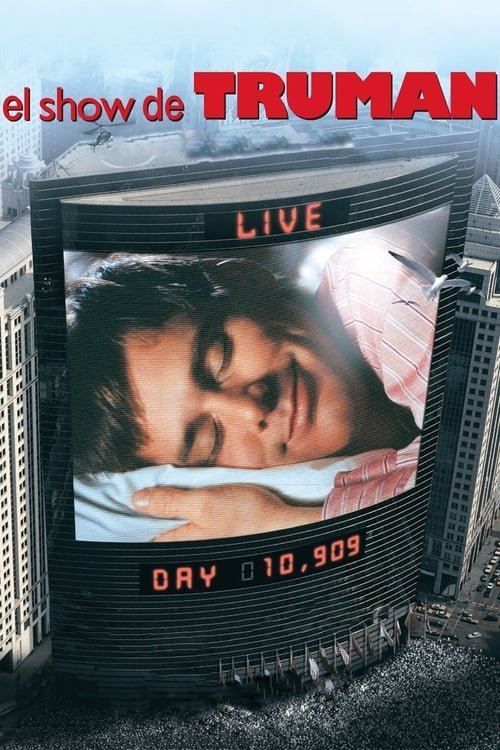

El show de Truman (1998)
Sinopsis Rápida
¿Qué harías si descubrieras que tu vida es un reality show global sin tu consentimiento? Truman Burbank lo descubre, y su búsqueda de la verdad es una emocionante carrera contra el reloj.
Sinopsis Detallada
Truman Burbank ha vivido toda su vida en una elaborada realidad simulada, un mundo televisivo controlado por un productor omnipotente. Ignorando la manipulación constante, Truman disfruta de una vida aparentemente normal hasta que empiezan a surgir extrañas coincidencias y fisuras en su perfecta realidad. La película explora temas de privacidad, control mediático y la búsqueda de la autenticidad en un mundo cada vez más mediatizado. La magistral actuación de Jim Carrey y la innovadora narrativa hacen de 'El show de Truman' una obra maestra del cine.
¿Por qué tenés que verla?
{{PUNTOS_CLAVE}}Idea Extra
Análisis de la influencia de 'El show de Truman' en la cultura de la realidad televisiva actual, comparándolo con ejemplos modernos de reality shows y la cultura de las redes sociales.
{{CONTENIDO_RELACIONADO}}